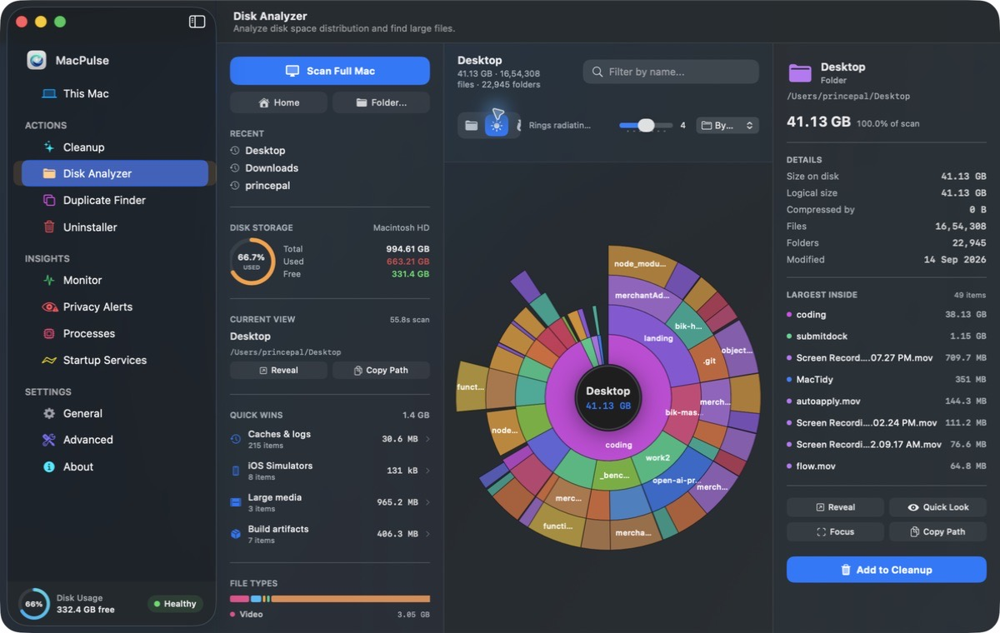
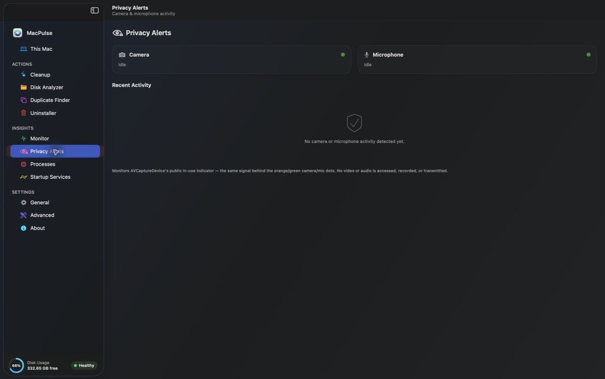
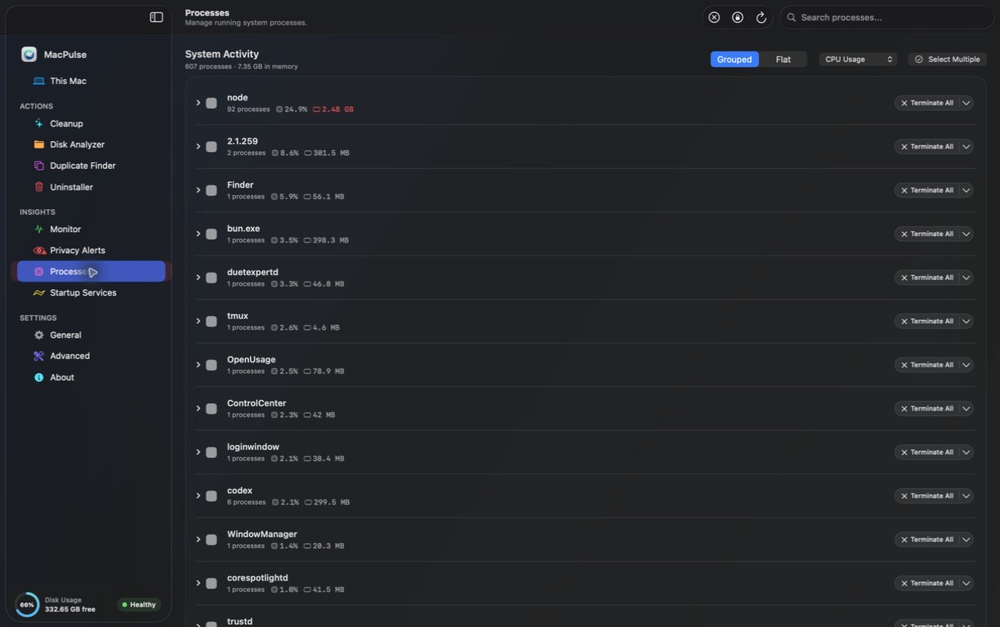

TOOL 01
Mach-O Dependency Graph
Evidence Uninstaller
Traces Mach-O binary dependencies, codesign entitlements, and receipt plists to remove real application leftovers, not just matching folder names.
Reclaim tens of gigabytes trapped in developer caches, runaway logs, and abandoned app containers. Zero background daemons. Zero telemetry. 100% pure Swift & SwiftUI.
curl -fsSL .../install.sh | bash








01 · ARCHITECTURE & TOOLS
Every module is hand-crafted in pure Swift and SwiftUI. No cross-platform Electron wrappers, no memory hogging, and zero background services eating your battery.
Traces Mach-O binary dependencies, codesign entitlements, and receipt plists to remove real application leftovers, not just matching folder names.
Finds configuration directories, sandboxed group containers, and preferences from applications you uninstalled months or years ago.
Reclaims gigabytes from Xcode DerivedData, iOS Simulator runtimes, package managers (npm, pip, Homebrew, Cargo, Gradle), and obsolete crash logs.
Visual breakdown of your storage with concentric sunburst and treemap modes. Zero indexing wait—traverses raw APFS directory blocks directly.
Detects true duplicate files through cryptographic hash verification. APFS clone and hardlink aware to protect shared storage blocks.
Inspects and manages runaway login items, background LaunchAgents, and LaunchDaemons using modern macOS SMAppService APIs.
Real-time CPU/GPU load rails, memory pressure gradient, and hardware sensor surveillance for camera & microphone activity.
02 · TRANSPARENCY
Commercial utilities lock you into $40/year recurring subscriptions and install 200MB background daemons in your menu bar. MacPulse is a transparent, developer-grade utility.
| Capability | MacPulse | Typical Cleaner (CleanMyMac) |
|---|---|---|
| License Model | Free & Open Source (MIT) | $39.95 / year subscription |
| Background RAM Footprint | 0 MB when closed (clean exit) | Always-running helper (200MB+ RAM) |
| Telemetry & Cloud Tracking | Zero network calls. 100% local | Analytics trackers & license checks |
| Uninstaller Mechanism | Mach-O dependency graph & receipts | Simple keyword regex folder search |
| Safety & Rollback | SQLite atomic snapshot journal (undo) | Direct delete to system Trash |
| Developer Tool Caches | Xcode DerivedData, Simulators, npm, pip | Generic system cache cleaning only |
| Native Architecture | 100% Native Swift & SwiftUI | Heavy proprietary framework bundle |
| Terminal & CLI Support | First-class macpulse CLI included | GUI only / No scriptable CLI |
03 · STRAIGHT ANSWERS
Clear explanations about system safety, permissions, and open-source architecture.
xattr -cr /Applications/MacPulse.app once.
04 · PACKAGING & DOWNLOADS
Universal native binary compiled for Apple Silicon (M1/M2/M3/M4) and Intel Macs. Free and open-source under the MIT license. Published directly through GitHub Releases.
macOS 26.0 Tahoe or later
Fastest automated install
curl -fsSL https://raw.githubusercontent.com/princepal9120/MacPulse/main/scripts/install.sh | bash
brew install princepal9120/tap/macpulse
Community build without Apple notarization fee
xattr -cr /Applications/MacPulse.app
xcodebuild -scheme MacPulse build